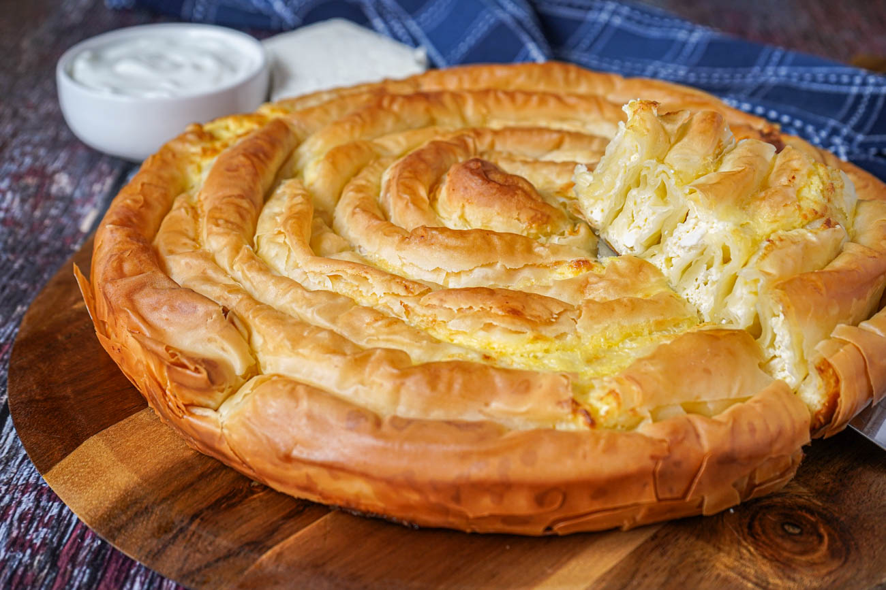

Banitsa

Description
Banitsa is a traditional Bulgarian considered by many (including me) the most iconic part of Bulgarian cuisine. It is a traditional pastry dish, prepared by preparing a mixture of eggs, yogurt, bulgarian cheese inside layers of pastry sheets which give the iconic snail shape of the Banitsa.
Ingredients
- 500 grams of pastry sheets
- 2 eggs
- 300 grams of bulgarian cheese
- 2-3 tablespoons of yogurt
- 1/4 of normal size butter packaging
- some oil/olive oil for the tray in which the banitsa will stay while it cooks in the oven
- and the most important ingredients, a few pinches of love make your banitsa stand out as an extraordinary piece of culinary masterpiece
- hopefully, i dont forget anything else or my mom will be very disappointed
Steps
- preheat your oven to 220 degrees (optional)
- put some oil/olive oil on your cooking tray so that your future banitsa babies can comfortably chill there and not stick to the surface
- break the 2 eggs and put them in a bowl and started whisking them
- add the 300 grams of cheese into the mixture
- add 2-3 tablespoons of yogurt into the mixture depending on the consitency of the mixture
- keep whisking until homogeneous
- open the pastry sheets and lay them out with the longer side horizontally.
- cut 3 small slices of butter and spread them out equally on the pastry sheets so our banitsa is not dry (no one likes dry banitsa)
- usually, with most commercial 500g pastry sheets on the market, they are enough for 7 rolls of banitsas so make sure you calculate how much of the mixture you use so its equal for all of the rolls (all rolls deserve equal love <3)
- after thorough calculations, spread the mixture of on your pastry sheets.
- grab two pastry sheets at the same time as they are very delicate babies and start rolling them. the motion would very familiar for some of the chefs here if they have rolled a cigarette or a joint (god forbid) before.
- after you have finished the rolling process, you have an exciting option ahead of you (yay). depending on the size of your oven and preference of how you want them to look like at the end, you have two options of arranging them: you could either make each banitsa into a seperate little baby snail so each one is individual (preferable for smaller ovens like mine); or the second option is to continously make a bigger banitsa snail forming one marvelous queen snail (traditional way of making the banitsa, also as seen in the picture on top)
- now, after you have made the most important decision of your life, you put the banitsa on your tray and continue with the next beautiful child.
- repeat the steps above until you are done with arranging all of them (aren't they beautiful)
- as already mentioned, having dry banitsa is something we dont really want so we take some of the butter again and put 2-3 small slices of butter on top of our babies like sunscreen
- at this point, we are almost done but the following step makes or brakes your banitsa and seperates a novice banitsa maker and a professional grandma with impressive experience of making banitsa for over 50 years. i am here to give you the authentic recipe so rest assured as i promise your banitsa will turn out amazing. the final step of the preparation of the banitsa is a pinch of love from all people partaking in the making of the banitsa (might seem silly but it really is that important)
- put your babies in the oven (thats sounds a bit sus) for around an hour (depending on how powerful your oven is) at around 200-220 degrees.
- after a while, a sure sign of a well done job will be the beautiful smell that will engulf your whole kitchen and house. make sure you have calculated your portions well as all your roomates or family members will want a piece (i feel sorry for all people who are allergic to cheese)
- take out the banitsa out of the oven around the 1 hour mark. at this point it should have a beautiful golden cooked color.
- traditional ways of eating the banitsa are with a drink called ayran or eating the rest of the yogurt you used for the mixture at the beginning
- enjoy (wow, now i am jealous of you, having the beautiful banitsa made, looks very delicious ngl)